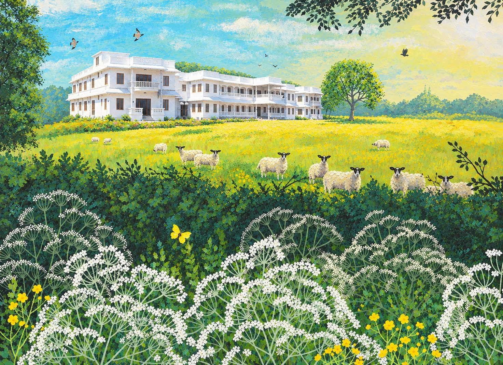
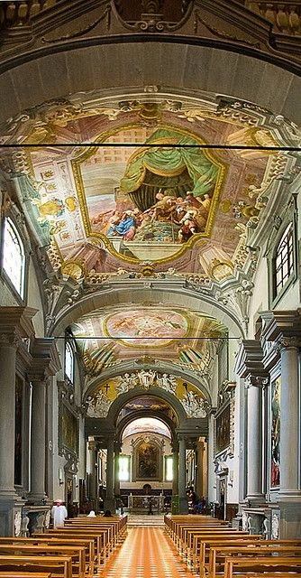

A Benedictine family of prayer, work and charity
Monks of the Vallombrosan Congregation, living the Rule of St. Benedict in the Oriental tradition of the Syro-Malabar Church.
Mariamala Monastery (St. Mary’s Mount), Pazhuthuruth, Kaduthuruthy
St. John Gualbert and Vallombrosa
The Vallombrosan Benedictine Congregation was founded by St. John Gualbert in 1036 at Vallombrosa, in the hills near Florence. His brother had been killed, and John set out to find the murderer and take revenge.
On Good Friday he came upon the man, who begged for mercy in the name of Christ crucified. John forgave him. He then went to pray in the church of San Miniato in Florence, where, the tradition says, the crucifix bowed its head towards him.
From an act of forgiveness came a life given entirely to God.
After years of prayer and reflection he gathered companions at Vallombrosa and founded the congregation, placing community life lived in charity at its heart. By the time of his death there were about twelve monasteries across Italy.

- 1036
Congregation founded at Vallombrosa by St. John Gualbert
- 1073
Death of St. John Gualbert, 12 July
- 1193
Canonised by Pope Celestine III
- 1988
Oriental branch founded in the Archeparchy of Kottayam
- 2013
Silver jubilee of the community in India
The Vallombrosan community in India
In 1988, at the request of the then Abbot General, Dom Antonio Lorenzo Russo OSB, the Priory of Our Lady of Montenero in Livorno founded a seminary in the diocese of Kottayam, Kerala, with the permission of Mar Kuriakose Kunnasserry, then Bishop of Kottayam.
The community was founded in the Oriental tradition of the Syro-Malabar Major Archiepiscopal Church, with the permission of the Congregation for the Oriental Churches in Rome.
Congregation for the Oriental Churches, Prot. No. 136/88, dated 25 November 1988
Mar Mathew Moolakkatt OSB, Archbishop of Kottayam, is a monk of the Vallombrosan Congregation.
Our houses
- Mariamala MonasterySt. Mary’s Mount, Pazhuthuruth, Kaduthuruthy
- Minor SeminaryFor aspirants, at S.H. Mount, Kottayam
- Study HousePhilosophy and theology, Bengaluru
The path of monastic formation
Young men who feel called to the monastic and priestly life are welcomed and accompanied step by step.
- CandidateMinor seminary at S.H. Mount
- PostulantFirst experience of community life
- NoviceThe novitiate year of prayer and the Rule
- Simple professionTemporary vows and studies in Bengaluru
- Solemn professionLife vows as a monk
- PriesthoodOrdination for service
Schools and colleges
Gallery
Visit or write to us
Mariamala Monastery
St. Mary’s Monastery, MariamalaThiruvampady P.O., Kaduthuruthy
Kottayam, Kerala +91 85907 13259
Carlos Dayara
S.H. Mount P.O.Kottayam 686 006, Kerala 0481 231 0764